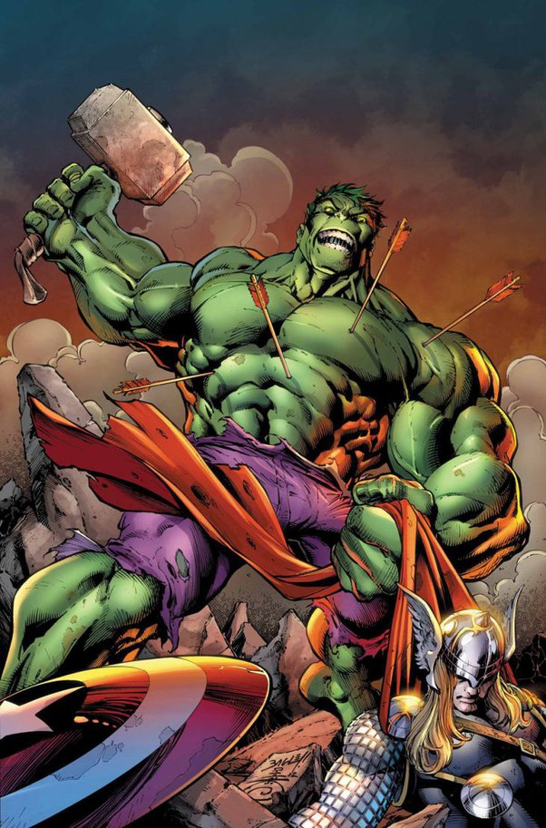

Hulk, también conocido como Bruce Banner, es uno de los superhéroes más icónicos de Marvel. Creado por Stan Lee y Jack Kirby, apareció por primera vez en el cómic *The Incredible Hulk #1*, publicado en mayo de 1962. Inspirado por la combinación de *Dr. Jekyll y Mr. Hyde* y el clásico monstruo de Frankenstein, Hulk fue diseñado para explorar la dualidad de la naturaleza humana: la lucha interna entre la razón y la ira.
El Dr. Bruce Banner se transformó en Hulk tras un experimento fallido con radiación gamma, convirtiéndose en una figura de fuerza imparable cuando se enfurece. Esta dualidad entre científico brillante y bestia incontrolable es una de las características principales del personaje.
Conoce las versiones más poderosa y más débil de Hulk.